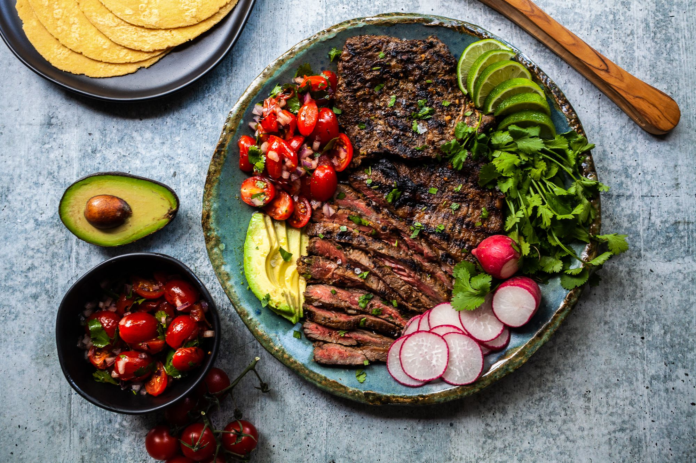

A little about myself, I was born in Erie Pa, in 1992. Former military, I love to game
and spend time with family and friends.
My favorite things
Family
Sports(Football,Basketball)
Gaming
Food(Favorite food is mexican)
Fishing

Picture of my favorite food Carne AsadaYoung hyena smiling.
Technology and Electronics Enthusiast
Technology and Electronics I find them fascinating and innovative. I remember how basic
they use to be, and to see the growth and evolution of them both has been fascinating to
say the least.I'm very excited to see where it goes.
In oXygen, go to File >> Save As, and carefully browse to find your GitHub
repo and its docs/ directory.
Save this file inside your docs/ directory as index.html. You should save
over any index.html you've already saved there to replace with this one. (Don't
capitalize index.html, spelling counts and you need the .html part at the end.)
Open your Bash shell (Windows) or Terminal (Mac) at your GitHub repo.
Use your git commands now. Check the status of your repo, add your
files for staging, commit them with a message, and push them to
the repo.
Check your GitHub repo on the code view and the web view to see your
updates.
The easiest way we know to create a new page for your site is to save the current one
you're working on with a new filename in the same directory. Open the new file so you
can keep working. You'll need to create a special kind of
relative link to connect the pages, like this.